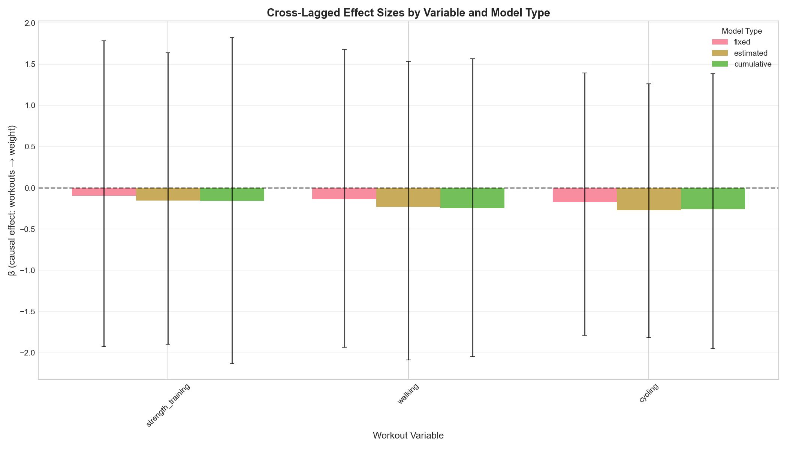
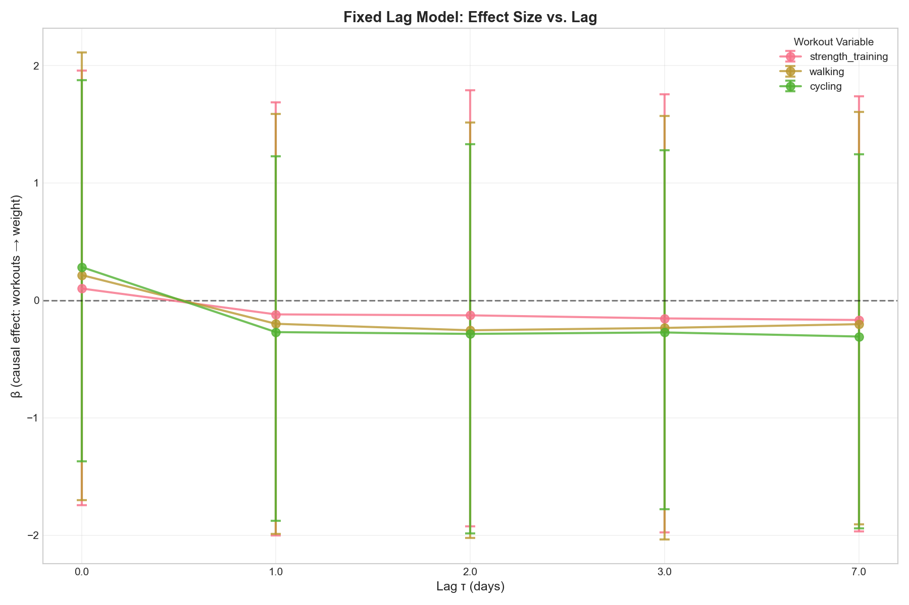
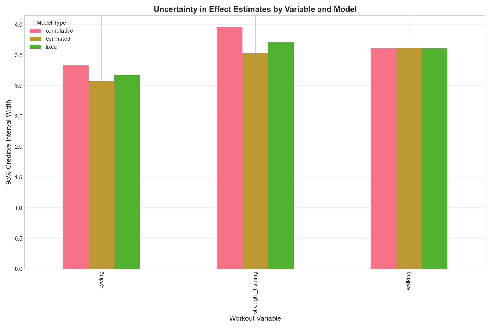

Generated: 2026-02-05 10:41:19
Results directory: output/full_comparison
Total variables analyzed: 3
Total model runs: 21
Model types: Fixed lag, Estimated lag, Cumulative lag
| Variable | Models | β Avg | β ± | β + | β - | Best Model | Avg CI Width |
|---|---|---|---|---|---|---|---|
| strength_training | 7 | -0.111 | 0.095 | 1 | 6 | nan | 3.718 |
| walking | 7 | -0.164 | 0.169 | 1 | 6 | nan | 3.611 |
| cycling | 7 | -0.197 | 0.213 | 1 | 6 | nan | 3.188 |


